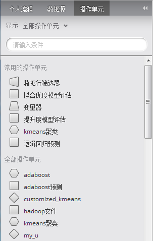
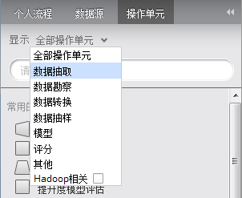

查看操作单元
用户具有建模师角色可以从“操作单元”选项卡中拖拽操作单元到打开的工作流中。
- 浏览“操作单元”选项卡，用户查看Alpine和用户自定的操作单元。

- 通过拖拽实现在当前打开的工作流中添加操作单元。
- 默认情况下，用户可查看所有的操作单元，另外，经常使用的操作单元出现在“常用的操作单元”条目下。
- 用户可以过滤操作单元
- 用户通过“显示”的下拉菜单对操作单元进行过滤。另外勾选“Hadoop相关”选项，过滤结果仅显示相关操作单元类别中与Hadoop相关的操作单元。

- 用户还可以在搜索栏中输入操作单元的名称进行过滤